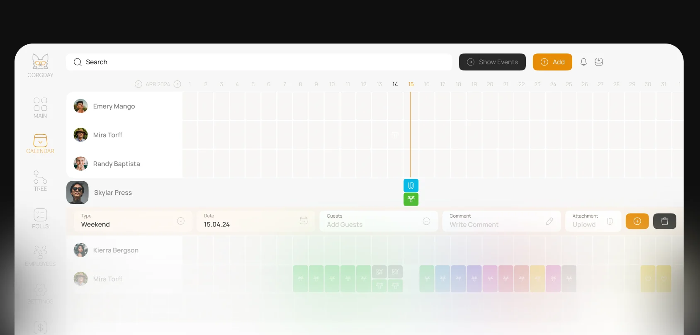
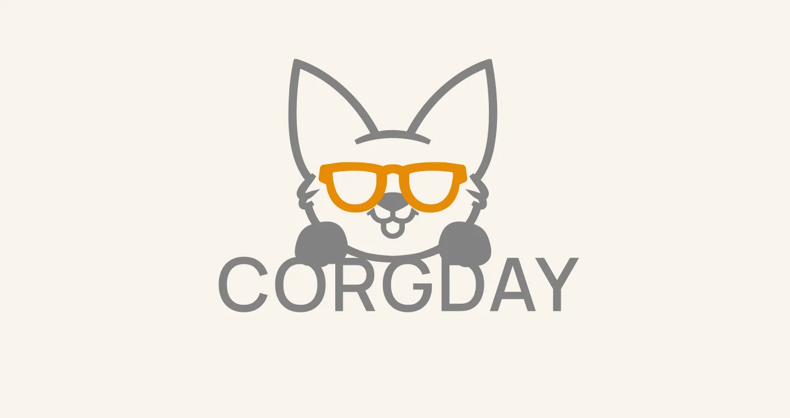
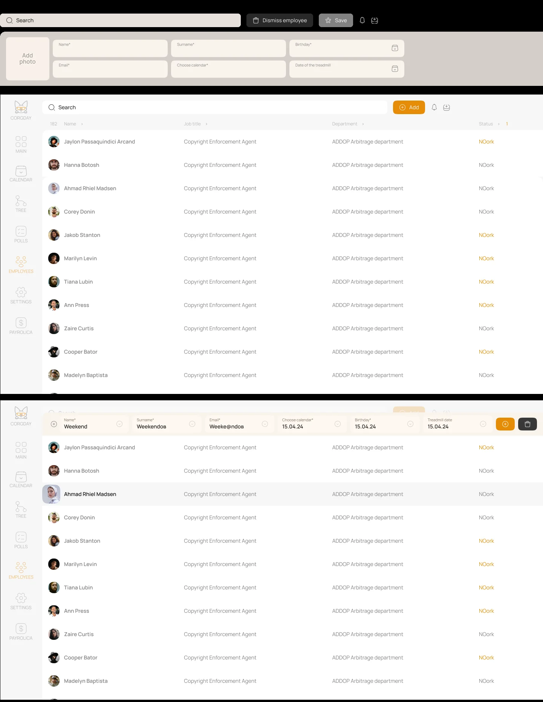
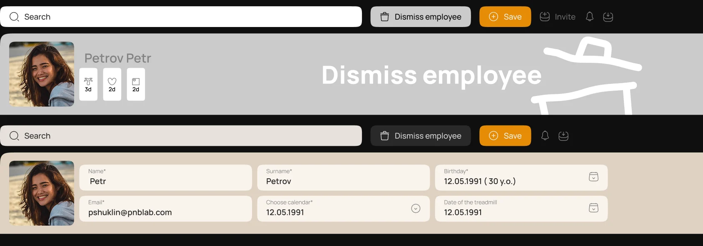
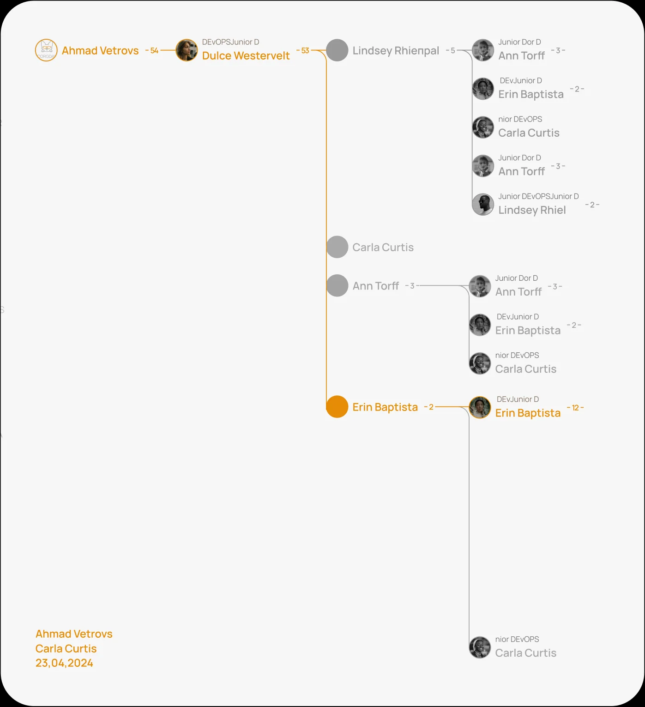
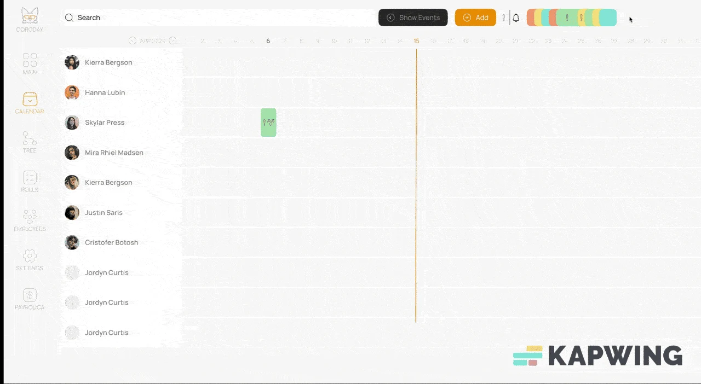

Перестроил HR-сервис вокруг ежедневной работы команды
Пересобрал информационную архитектуру HR-сервиса: обработку зарплатных исключений, документы и обращения сотрудников. Добавил контекстные действия и самостоятельные сценарии для сотрудников.

Задача, решение и итог
- 01Задача
Действия были разнесены по вкладкам, а статусы приходилось отслеживать вручную.
- 02Решение
Перенёс действия к записи и разделил пути HR-команды и сотрудника.
- 03Функциональный итог
Работа с очередью и самостоятельные запросы собраны в одном сервисе.
С чем пришла команда
Corgday: внутренний HR-сервис холдинга. HR-команда работает с зарплатными исключениями, документами и обращениями сотрудников. Исходный сценарий требовал переключения между вкладками и ручного отслеживания статусов.
Нужно было собрать рабочие действия вокруг конкретной записи. Одновременно сотрудникам требовался самостоятельный доступ к отпускам, больничным и личным записям.
- Сохранить обзор данных при работе с записью.
- Сделать документы и обращения последовательными сценариями.
- Адаптировать личные задачи сотрудника под смартфон.

Упростил сложные табличные данные и формы
Упростил сложные табличные данные и формы, сделав интерфейс интуитивным для HR-специалистов.
Перестроил архитектуру вокруг реальных HR-процессов. Контекстные действия доступны прямо в строке: пользователь работает с выбранной записью и сохраняет обзор таблицы.
Это важно для последовательной обработки очереди. Данные, выбранный сотрудник и доступное действие остаются рядом, поэтому интерфейс поддерживает рабочий контекст.
Каталог сотрудников, карточка профиля и редактирование формы используют одну визуальную и сценарную логику.
Сколько действий требует типовая задача
Синтетическая модель


Собрал календарь и payroll в рабочий сценарий
В календаре редактирование открывается возле выбранной записи, поэтому HR-специалист сохраняет обзор команды и не теряет рабочий контекст.
Payrolica поддерживает расчёт заработной платы, статусы и исключения. Плотные данные разбиты на последовательные состояния и действия.


Добавил документооборот, аналитику и Slack-алерты
Спроектировал модули для внутреннего документооборота и аналитики сотрудников.
Slack-алерт модуль для автоматизации и уведомлений о новых документах, и их контроля внутри холдинга.
Оргдерево, аналитика и уведомления дополняют основную HR CRM и возвращают специалиста к нужной записи или событию.




Разделил задачи HR и сотрудника
Спроектировал самостоятельные сценарии для отпусков, больничных и личных записей. Генерацию документов собрал в последовательную форму.
Для сотрудника важна возможность выполнить конкретное действие со смартфона. Для HR, обзор данных и работа с очередью. Адаптивный интерфейс учитывает обе задачи.
Уведомления через Slack дополняют рабочий сценарий и возвращают человека к нужному событию.
Карта рабочих сценариев
- Обзор очереди
- Работа с записью
- Контекстное действие
- Личная задача
- Форма запроса
- Документ или запись
Что получилось
HR-команда получила рабочий интерфейс с действиями в контексте записи. Календарь, карточки и таблицы поддерживают повседневные процессы.
Сотрудникам доступны собственные сценарии: отпуска, больничные, личные записи и документы. Личные задачи и работа оператора связаны в одном сервисе.